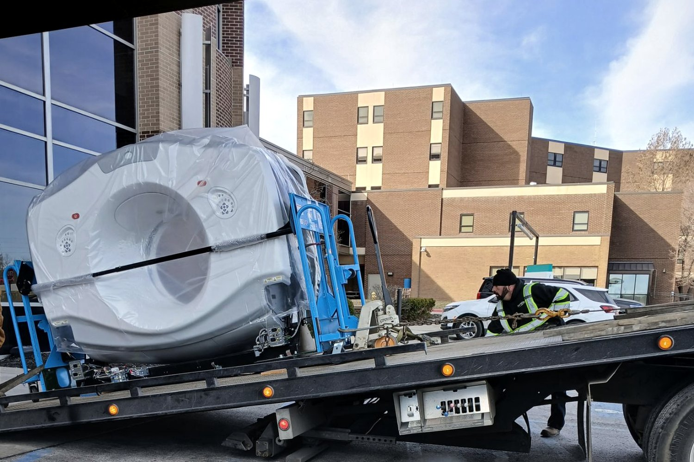
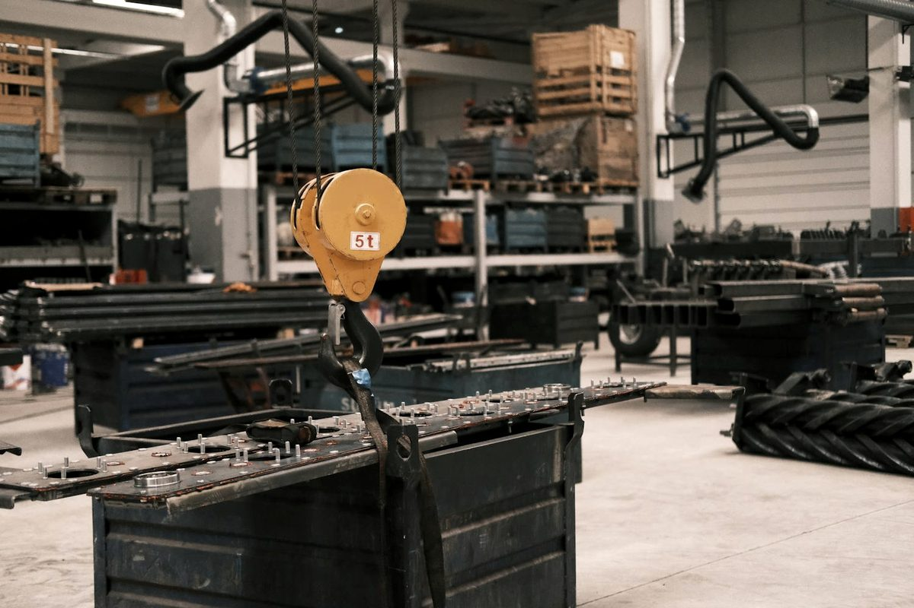
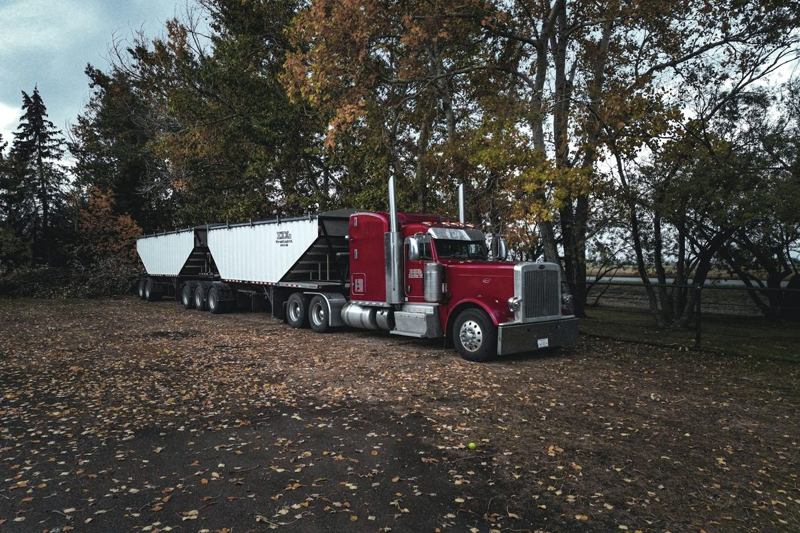

When it's too heavy, too tight, or too expensive to get wrong, you call a rigger. We plan every lift like an engineering problem and execute it like a road crew — machinery moving, equipment setting, and precision heavy lifts done right the first time. From a few hundred pounds to 200,000 lbs and beyond — single machines, full production lines, and complete facility moves.
Every hour a production line sits idle costs you money — so every move starts with a documented plan and ends on schedule. Badass Logistics rigs, lifts, and sets industrial equipment of nearly any size. Whether you're relocating a single CNC machine across the shop or moving an entire production line to a new facility, our crews bring the gear and the plan to do it safely — without tearing up your floors, your schedule, or your budget.
And because we also run heavy haul transport, dispatch, and freight moving in-house, your rigging job doesn't stop at the loading dock. We can rig it, haul it, and set it at the destination — one team, one point of contact, one accountable crew.
Move single machines or full lines within a plant or across the country.
Hydraulic gantries, boom trucks, and carry-deck cranes for planned, documented lifts.
Level, anchor, and align machinery to spec at the destination.
Hydraulic toe jacks, air skates, and roller dollies for tight, low-clearance moves.
Full facility relocations — disconnect, transport, reinstall.
Equipment arriving before the floor is ready? We receive, secure, and store it — then deliver and set on your schedule.
Some loads can't just be muscled into place. MRI scanners, CT machines, and other medical and lab equipment are heavy, fragile, and ruthlessly sensitive to shock and tilt. We rig them with the care they demand — and the engineering to back it up.



Every lift runs on a written plan — dimensions, load ratings, rigging geometry, equipment selection, and sequence settled before anyone touches the load. Our crews work to OSHA rigging and signaling requirements, every piece of rigging hardware is load-rated and inspected before the lift, and floor loading gets checked along the entire path of travel, not just under the pick. No improvised rigging, no cut corners.
Manufacturing (CNC, stamping presses, injection molding) · Healthcare (MRI, CT, imaging equipment) · Energy (generators, transformers, turbines) · Data centers (UPS systems, cooling plants) · Construction (precast, structural steel) · Food & beverage (processing and filling lines) · Aerospace (test equipment, machining centers). Need it moved across the country instead of across the plant? That's our machinery moving and heavy haul teams, same roof.
What riggers do, the equipment they use, and why every lift is an engineering problem first.
Read the guide field guideOEM prep, toe jacks and skates, lift points, air-ride transport, and re-leveling at the destination.
Read the guide field guideMagnet weight, cryogens, shock and tilt limits — how a scanner move actually gets done.
Read the guideSend us the specs and the site. We'll plan the lift and quote it fast.
Request a Rigging Quote